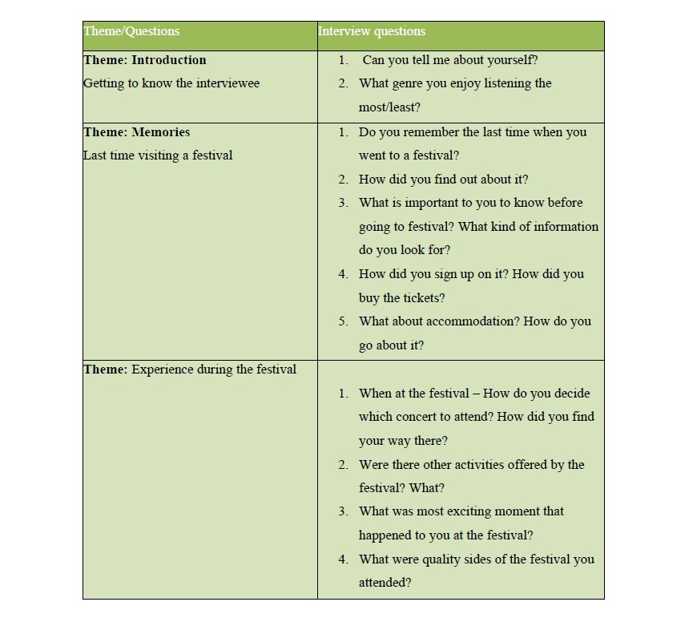
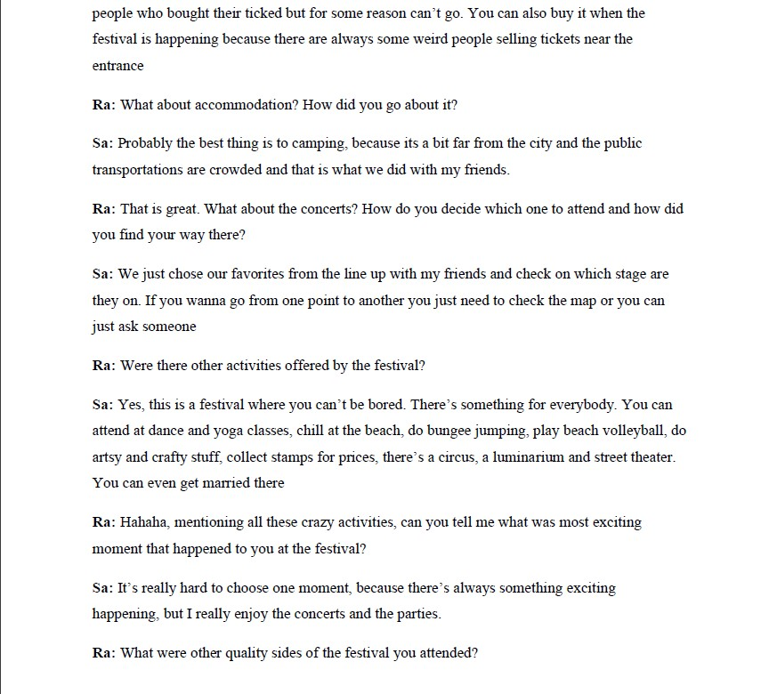
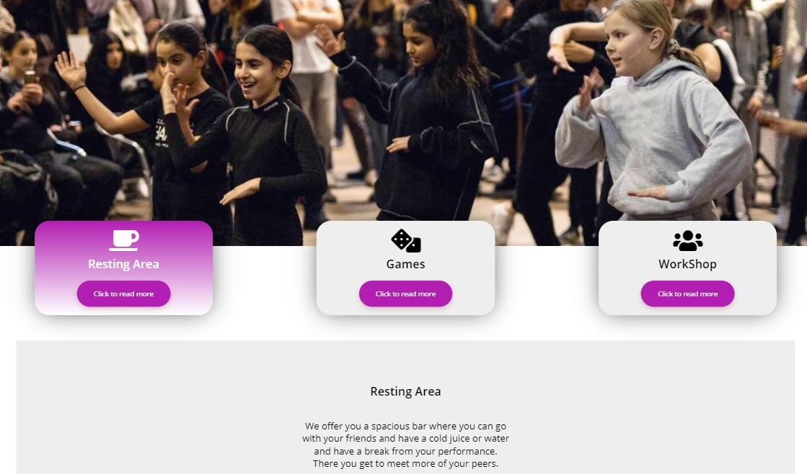
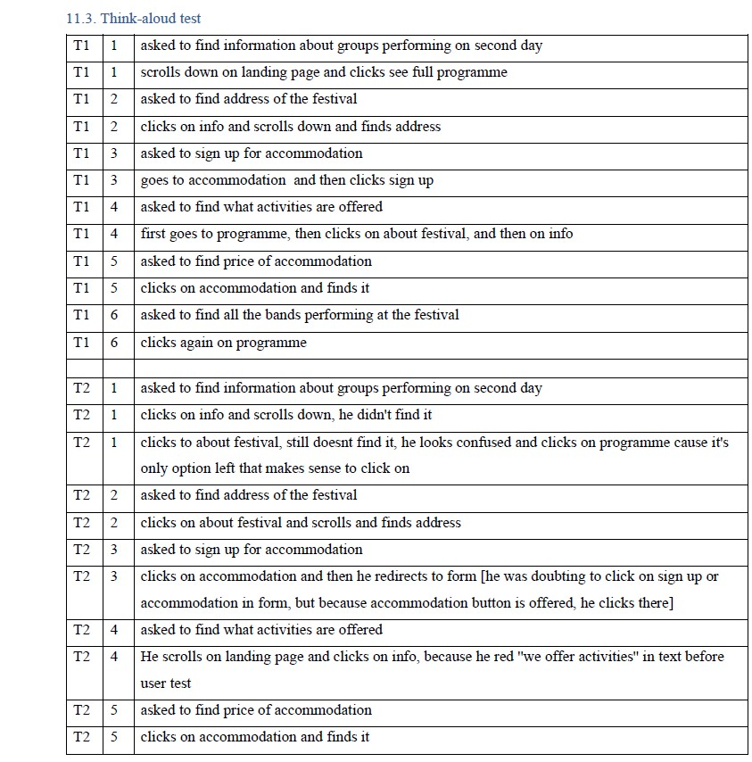

Problem:
Currently, Ungdomsringens does not have a dedicated website for the music festival itself and the information about it is spread across multiple sources which makes it difficult for potential visitors to find relevant information on the topic. Furthermore, for some of the new users it may be difficult to find the details about how to participate the event, as well as the information about rules, fee or the accommodation. An important aspect is the fact that every year the information is altering regarding the Festival, making it hard to follow up on the newest program of the festival.
For this project, me and my team performed interviews in order to help us build the information architecture of the website. We prepared interview guide where the questions fall into different topics
 During the process of creating the design of the product, me and my group worked with Atomic Design. Personally I find it really useful way of approaching a project since it saves time and makes working process easier.
In the end of the prototyping cycle, Think-aloud test has been performed on four participants and the results have been precisely analyzed and taken into account.
